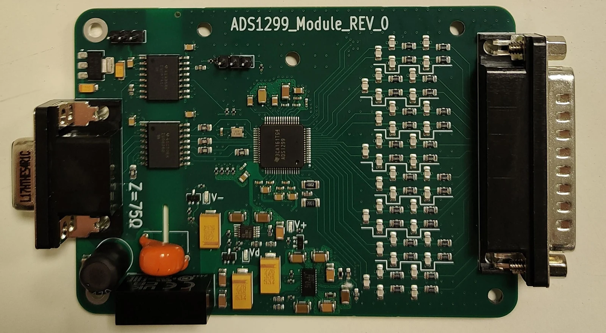
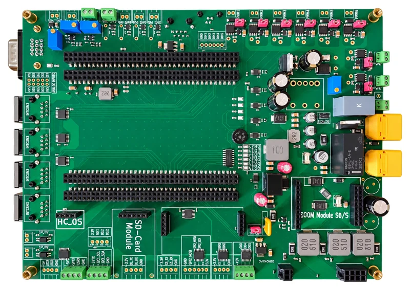
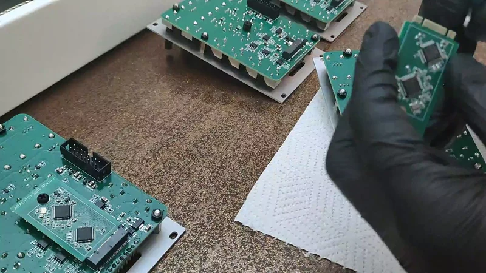
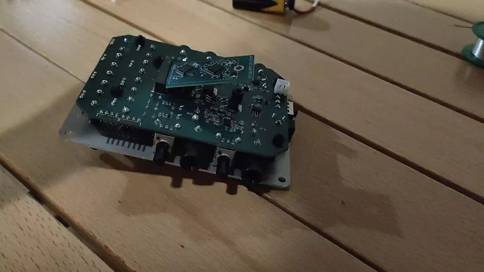
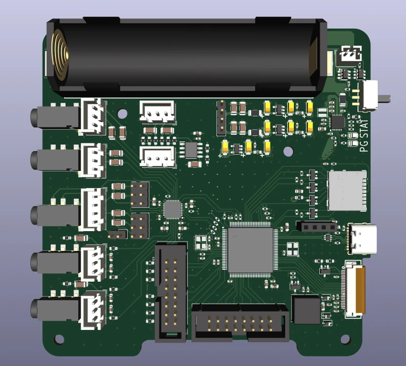

EMG acquisition board
An isolated, eight-channel acquisition system for diaphragmatic EMG, developed for preclinical respiratory research.
ENGINEERING PORTFOLIO / 2026
I’m Lorenzo Lanzo, a biomedical engineer developing electronics and embedded systems for biomedical and audio applications. From low-amplitude biological signals to modular synthesizers, I connect the circuit, the code, and the prototype.

01 / SELECTED PROJECTS
An isolated, eight-channel acquisition system for diaphragmatic EMG, developed for preclinical respiratory research.

ASSEMBLED PCBA redesigned controller PCB for a research ventilator, integrating power distribution, pneumatic sensing, and actuator interfaces.
 PCB PHOTO
PCB PHOTOA reusable audio-processing core that puts a SigmaDSP and its companion STM32 on a compact plug-in module.

VIDEO STILLAn analog carrier and front-panel interface that brings the reusable audio SoM into a modular synthesizer.

VIDEO STILLA guitar and bass effects platform combining a high-impedance analog front end with the shared audio-processing module.

CAD RENDERA portable audio-development platform combining an STM32H7, audio codec, storage, battery charging, and a display interface.
No projects in this category yet. Choose All work to see the collection.
A good design connects the schematic, the code, and the physical world.
My work spans biomedical acquisition systems and musical electronics. I design PCBs, develop embedded firmware, and bring the pieces together in a physical prototype, with research results and design limitations documented alongside the hardware.
03 / TOOLBOX
Different disciplines.
One connected process.
KiCad · EasyEDA
Analog-Front-End design · Embedded systems design
Schematic drawing · PCB layout
C · Python
STM32 · nRF52 · SigmaDSP · XCORE.ai
STM32CubeIDE · SEGGER Embedded Studio · Visual Studio Code
SigmaStudio · Ableton Live
Fusion 360 · SolidWorks
Panel design · Assembly
04 / LET’S CONNECT
I’d like to hear what you’re building.